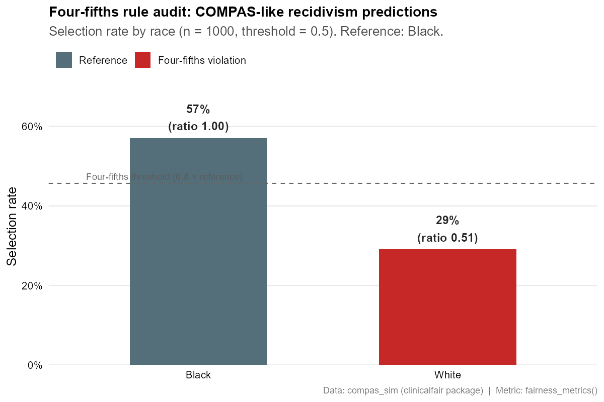
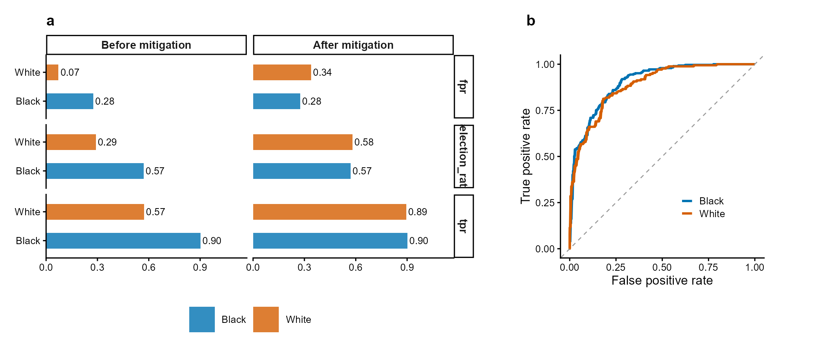
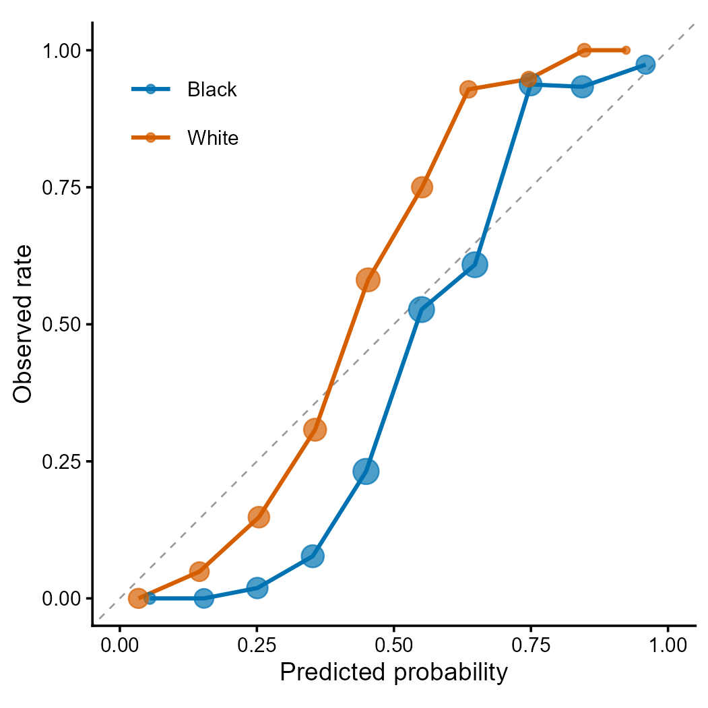

Overview
clinicalfair is a post-hoc fairness auditing toolkit for clinical prediction models. It evaluates existing models by computing group-wise fairness metrics, visualizing disparities, and performing threshold-based mitigation – motivated by regulatory expectations for transparency in clinical AI.
- Metrics: demographic parity, equalized odds, predictive parity, AUC, Brier score – with optional bootstrap confidence intervals
- Visualization: disparity plots, ROC by group, calibration by group
- Mitigation: group-specific threshold optimization with configurable grid resolution (default 0.01)
- Intersectional: cross-tabulated analysis (race x sex x age) with automatic small-group filtering
- Reporting: four-fifths rule violation detection

Figure 1 | Fairness audit with threshold mitigation. (a) Group-wise selection rate, TPR, and FPR before and after equalized-odds threshold optimization. Mitigation reduces cross-group TPR disparity while maintaining acceptable accuracy. (b) ROC curves by racial group showing differential model performance. Data: COMPAS-style simulated recidivism predictions. Methods: Hardt et al. (2016); Obermeyer et al. (2019).
Why clinicalfair?
Existing R packages approach fairness from different angles:
| Package | Focus | clinicalfair difference |
|---|---|---|
fairmodels |
Model-level fairness (wraps mlr3) | clinicalfair is model-agnostic: works with any predicted probabilities |
fairness |
Metric computation | clinicalfair adds threshold mitigation + intersectional analysis |
fairmetrics |
CIs for fairness metrics | clinicalfair also provides bootstrap CIs, plus audit reports with four-fifths rule screening |
clinicalfair is designed for the clinical audit use case: a clinician or regulator receives a trained model and needs to answer “is this model fair across patient subgroups?” in one function call, with actionable output.
# One-line audit
fairness_report(fairness_data(predictions, labels, race))Installation
# Stable release from CRAN
install.packages("clinicalfair")
# Development version from GitHub
# devtools::install_github("CuiweiG/clinicalfair")Quick start
library(clinicalfair)
data(compas_sim)
# Create fairness evaluation object
fd <- fairness_data(
predictions = compas_sim$risk_score,
labels = compas_sim$recidivism,
protected_attr = compas_sim$race
)
# Compute metrics
fairness_metrics(fd)
# With bootstrap confidence intervals
fairness_metrics(fd, ci = TRUE, n_boot = 2000)
# Generate audit report
fairness_report(fd)
# Mitigate via threshold optimization
threshold_optimize(fd, objective = "equalized_odds")
Figure 2 | Calibration curves by racial group. Each point represents a decile bin; point size proportional to sample count. Deviation from the diagonal indicates miscalibration. Differential calibration across groups is a key fairness concern identified by Obermeyer et al. (2019) Science 366:447.
Functions
| Function | Description |
|---|---|
fairness_data() |
Bundle predictions, labels, protected attributes |
fairness_metrics() |
Compute group-wise fairness metrics (optional bootstrap CIs) |
fairness_report() |
Generate audit report with four-fifths rule screening |
threshold_optimize() |
Group-specific threshold mitigation (configurable grid resolution) |
intersectional_fairness() |
Cross-tabulated multi-attribute analysis (small-group filtering) |
autoplot() |
Disparity bar plots (S3 method) |
plot_roc() |
ROC curves by protected group |
plot_calibration() |
Calibration curves by group |
Key references
- Obermeyer Z et al. (2019). Dissecting racial bias in an algorithm. Science 366:447. doi:10.1126/science.aax2342
- Hardt M et al. (2016). Equality of Opportunity in Supervised Learning. NeurIPS.
- FDA (2021). Artificial Intelligence/Machine Learning (AI/ML)-Based Software as a Medical Device (SaMD) Action Plan.